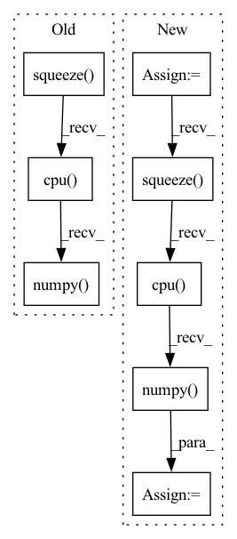

Pattern ID :12321
Before Change
// Draw keypoint matches
src = out["src_rc"][-1].squeeze().detach().cpu().numpy()
tgt = out["tgt_rc"][-1].squeeze().detach().cpu().numpy()
match_weights = np.exp(out["match_weights"][-1].squeeze().detach().cpu().numpy() )
keypoint_ints = out["keypoint_ints"]
ids = torch.nonzero(keypoint_ints[-1, 0] > 0, as_tuple=False).squeeze(1)After Change
// Draw scores
scores = out["scores"][-1]
if scores.size(0) == 3:
scores = scores[1] + scores[2]
scores = scores.squeeze().detach().cpu().numpy()
plt.imshow(scores, cmap="inferno")
plt.colorbar()
plt.title("log det weight (weight score vis)")
score_img = convert_plt_to_tensor()In pattern: SUPERPATTERN
Frequency: 3
Non-data size: 8
Instances Fragment ID: 41696524
Project Name: utiasasrl/hero_radar_odometry
Commit Name: c1043c84c77f1a20b667d981d4cd286cb378c71a
Time: 2021-01-25
Author: david.yoon@robotics.utias.utoronto.ca
File Name: utils/vis.py
M Class Name: AnonimousClass
N Class Name: AnonimousClass
M Method Name: draw_batch_steam(3)
N Method Name: draw_batch_steam(3)
M Parent Class:
N Parent Class:
M File Name: utils/vis.py
N File Name: utils/vis.py
M Start Line: 55
M End Line: 134
N Start Line: 95
N End Line: 122
Before Change
for data in test_loader:
x = data[0].squeeze(0).squeeze(0).detach().cpu().numpy()
y = data[1].squeeze(0).squeeze(0).detach().cpu().numpy()
x_seg = data[2].squeeze(0).squeeze(0).detach().cpu().numpy()
y_seg = data[3].squeeze(0).squeeze(0).detach().cpu().numpy()
x = ants.from_numpy(x)
y = ants.from_numpy(y)
After Change
x_seg_oh = nn.functional.one_hot(x_seg.long(), num_classes=46)
x_seg_oh = torch.squeeze(x_seg_oh, 1)
x_seg_oh = x_seg_oh.permute(0, 4, 1, 2, 3).contiguous()
x_seg_oh = x_seg_oh.squeeze(0).detach().cpu().numpy()
y_seg = data[3].squeeze(0).squeeze(0).detach().cpu().numpy()
Fragment ID: 41696520
Project Name: junyuchen245/transmorph_transformer_for_medical_image_registration
Commit Name: 0612d1a704653ff98a92a228ecaefd2023577062
Time: 2022-09-07
Author: jchen245@jhmi.edu
File Name: IXI/Baseline_traditional_methods/SyN/infer_IXI.py
M Class Name: AnonimousClass
N Class Name: AnonimousClass
M Method Name: main(0)
N Method Name: main(0)
M Parent Class:
N Parent Class:
M File Name: IXI/Baseline_traditional_methods/SyN/infer_IXI.py
N File Name: IXI/Baseline_traditional_methods/SyN/infer_IXI.py
M Start Line: 57
M End Line: 86
N Start Line: 58
N End Line: 96
Before Change
def _extract_attentions(self, layer):
fmaps = self._find(self.fmap_pool, layer)
grads = self._find(self.grad_pool, layer)
weights = self._compute_grad_weights(grads)
gcam_tensor = self._generate_helper(fmaps, weights)
attention_maps = []
for i in range(self.logits.shape[0]):
attention_map = gcam_tensor[i] // .unsqueeze(0)
attention_map = attention_map.squeeze().cpu().numpy()
attention_maps.append(attention_map)
return attention_maps
After Change
gcam_tensor = self._generate_helper(fmaps, grads)
attention_maps = []
for i in range(self.logits.shape[0]):
attention_map = gcam_tensor[i].squeeze().cpu().numpy()
attention_maps.append(attention_map)
return attention_maps
Fragment ID: 41696507
Project Name: karol-g/gcam
Commit Name: 681255dac4446701f60e60fe8d95804808735084
Time: 2020-04-20
Author: KarolGotkowski@gmx.de
File Name: gcam/backends/grad_cam.py
M Class Name: GradCAM
N Class Name: GradCAM
M Method Name: _extract_attentions(2)
N Method Name: _extract_attentions(2)
M Parent Class: _BaseWrapper
N Parent Class: _BaseWrapper
M File Name: gcam/backends/grad_cam.py
N File Name: gcam/backends/grad_cam.py
M Start Line: 147
M End Line: 153
N Start Line: 155
N End Line: 160